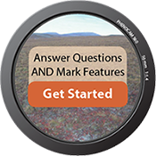

Keep an Eye On Changing Seasons
You can help study the impacts of changing climates by spotting seasonal features of plants.
Two Ways to Classify Images
By identifying images with changing leaves, blooming flowers, and other easy-to-recognize features, you will contribute to a better understanding of how plants are responding to climate change.
